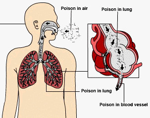

Terhirup
Paparan Jangka Pendek : Paparan yang berlebihan dapat menyebabkan iritasi pada mata, hidung, tenggorokan dan saluran pernafasan, efek terhadap susunan syaraf pusat, pusing, kejang dan koma, efek pada darah, kerusakan paru, edema paru yang tertunda, kanker.
Tertelan
Paparan Jangka Pendek : Toksik. Bahan bersifat karsinogen menurut Paparan dikaitkan dengan efek karsinogenik dan reproduktif, aborsi spontan, keracunan syaraf dan penurunan tingkat kesuburan pada hewan jantan dan kematian janin, serta perubahan mutagenik

Kontak dengan mata
Paparan Jangka Pendek : Iritasi kornea mata, terluka bila bersentuhan dengan cairan bahan. Kemungkinan dapat menyebabkan katarak.